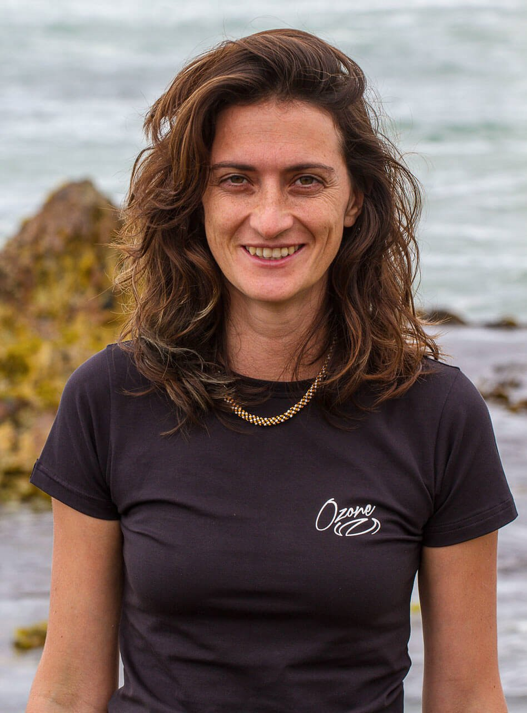

My story
I spent my life healing nature — while quietly struggling to heal myself.
I'm Sarah. I'm a marine and freshwater ecologist and a conservation scientist, and from the outside my life in the water looked like a success. Inside, I carried the anger, shame, and low self-worth of childhood trauma that no achievement could touch.
The way back wasn't through understanding it all. It was through my body, the ocean, and somatic practice — slowly coming home to myself. That path is what I now walk with other women.
Read my full journey